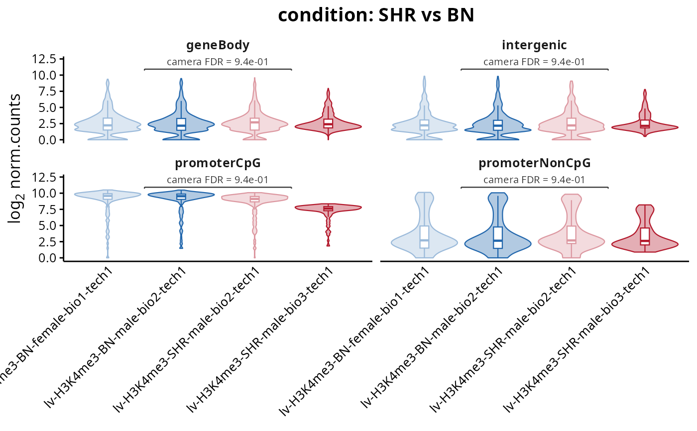
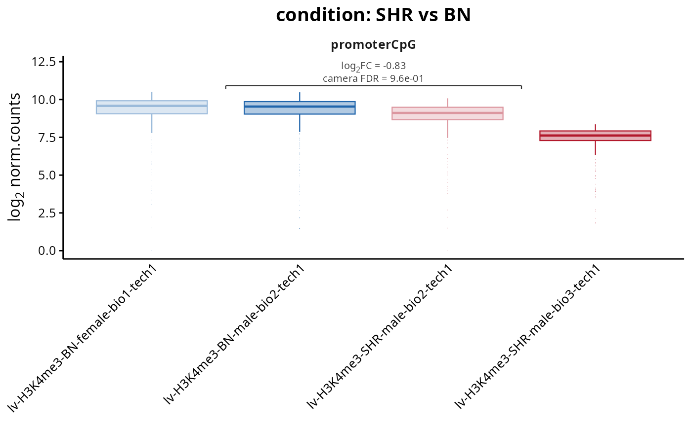

Draws the signal of every sample over the regions of each set, one violin per sample, with a bracket joining the groups being compared and the set level fold change and p-value written on it. Where plotSetDistribution shows the fold changes the model estimated, this one shows the values those estimates came from, so a set that moved because one replicate is out of line is visible rather than hidden inside a mean.
Usage
plotSetSignal(
setResults,
counts = NULL,
contrast = NULL,
set = NULL,
groupBy = NULL,
groupOrder = NULL,
comparisons = NULL,
valueColumn = "mean.log2FC",
style = "violin",
assay = NULL,
log2Scale = TRUE,
annotate = TRUE,
facetScales = "fixed",
maxRegions = 20000,
colours = NULL,
baseColours = NULL,
title = NULL,
subtitle = NULL,
legendPosition = "none",
baseSize = 12
)Arguments
- setResults
RegionSetDE.setResultsorRegionSetDE.setResultsListobject. ARegionSetDE.fitor aRegionSetDE.countsobject is accepted as well, in which case no annotation is written.- counts
RegionSetDE.countsobject holding the values, whensetResultscarries none. Default:NULL.- contrast
String with the name of the contrast to draw, or its position, when
setResultsholds several of them. Default:NULL.- set
Character vector with the names of the region sets to draw. Default:
NULL, all of them.- groupBy
String with the name of a
colDatacolumn driving the colour and the ordering of the samples. Default:NULL, the column the contrast separates.- groupOrder
Character vector with the levels of
groupByin the order they must appear, which is also the order the colour families are handed out in. Default:NULL, the reference level of the contrast first, alphabetical when the contrast does not name two levels.- comparisons
List of character vectors of length two, naming the groups joined by a bracket. Only the pair the contrast actually compares is labelled. Default:
NULL, that pair.- valueColumn
String with the fold change written on the bracket, either
"mean.log2FC"(the shift of the set away from zero, which is what the two sides of the bracket differ by) or"delta.log2FC"(the difference with the background). Default:"mean.log2FC".- style
String with the kind of plot, either
"violin"or"boxplot". Default:"violin".- assay
String with the name of the assay to draw. Default:
NULL, the normalised assay when present, the raw counts otherwise.- log2Scale
Logical value to indicate whether the values must be drawn on a log2 scale. Default:
TRUE.- annotate
Logical value to indicate whether the bracket and its label must be drawn. Default:
TRUE.- facetScales
String with the scales of the panels, one among
"fixed","free","free_x"and"free_y". Default:"fixed".- maxRegions
Numeric value with the number of regions drawn per set. Default:
20000.- colours
Named character vector with one colour per sample, overriding the shades built from the groups. Default:
NULL.- baseColours
Character vector with one base colour per group, from which the shades of the replicates are built. Default:
NULL, blue then red, matching the down and up colours ofplotVolcano.- title
String with the title of the plot, rendered as markdown. Default:
NULL, the contrast.- subtitle
String with the subtitle of the plot, rendered as markdown. Default:
NULL.- legendPosition
String with the position of the legend. Default:
"none", the samples are already named on the axis.- baseSize
Numeric value with the base font size. Default:
12.
Details
The violins are drawn on the values as they are, without centring each region on its own mean, so what separates two groups here is the difference in absolute signal rather than the per-region contrast the model tested. Those two disagree whenever a set is heterogeneous: a handful of very strong regions dominate the shape of a violin while contributing one row each to the fold change. The number on the bracket comes from the set level test, not from the violins under it, which is why a small visible shift can carry a decisive p-value and a large one need not.
valueColumn decides which fold change that number is. "mean.log2FC" is the shift of the set away from zero under the contrast, which is the quantity the two sides of the bracket differ by and the reason it is the default. "delta.log2FC" is the difference between the set and the background it was compared against, a different comparison that the bracket does not draw.
The fold change and the p-value belong to one comparison, the one the contrast declared, so they are written only when the axis is grouped by the variable that contrast separates. Grouping by anything else, a replicate or a batch, still colours and orders the violins but drops the bracket: the numbers would describe a comparison the figure is no longer showing. The default for groupBy is therefore the column the contrast came from, read from the object rather than guessed.
Each group is given a colour family and the replicates inside it a shade, running from light to the base colour in the order the samples appear. The first group gets the blue of the down regions of plotVolcano and the second the red of the up ones, so a figure made of both reads consistently; the reference level of the contrast is the one that comes out blue.
Sets larger than maxRegions are thinned, deterministically, before the violin is computed. The annotation is unaffected, since it is read from the test rather than recomputed here.
Examples
fit <- loadExampleData("fit", verbose = FALSE)
setResults <- testRegionSets(fit, contrast = c("condition", "SHR", "BN"),
verbose = FALSE)
plotSetSignal(setResults, groupBy = "condition")

plotSetSignal(setResults, set = "promoterCpG", groupBy = "condition",
style = "boxplot")
